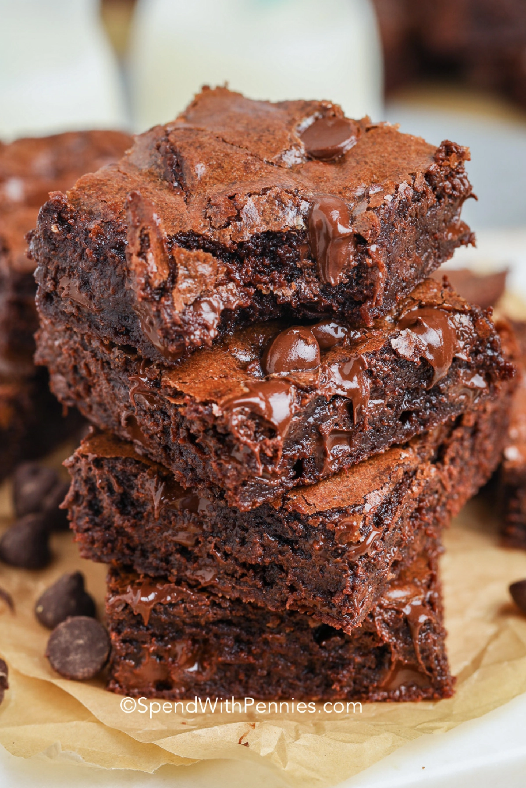

Brownies Recipe

A delicious take on the classic homemade dessert
Ingredients You'll Need
- 1/2 cup melted unsalted butter or 1 stick
- 1/2 cup unsweetened cocoa
- 1 cup sugar
- 2 large eggs
- 1 teaspoon vanilla
- 1/2 cup flour
- 1/4 tsp salt
Steps
- Preheat oven to 350°F. Grease an 8x8 square pan or line with foil and set aside.
- In a medium bowl combine melted butter and cocoa and sugar stir until fully dissolved.
- Add eggs one at a time then vanilla and stir until well combined.
- Stir in flour and salt until the flour is fully combine. Be careful not to overmix mix.
- Spread in pan and bake for approximately 20-22 minutes or until the center is slightly set. Be careful not to over-bake!
- Cool completely then cut into 9 large squares.